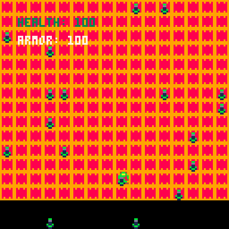

CONTROL SCHEME: Up/down/left/right arrow keys = Move Character
Z/X/C/V: Fire weapons (either a heat seaking missile or a laser rifle bullet)
GOALS for current version:
1.) Walk through health pickups generated around the map to increase character health
2.) Move to edges of map to see that the character is "boxed in" and cannot walk off screen
3.) No shooting mechanic implemented yet (will aim to get this feature done by the next demo)
4.) If the character loses all health, user will be shown a death screen and prompted to hit 'X' to continue.
5.) Shoot or run through all enemies and proceed to defeat the final boss to win the game.
